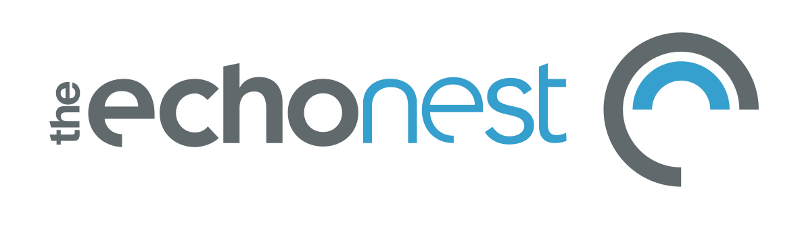
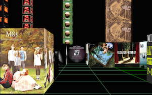
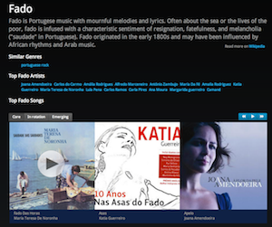
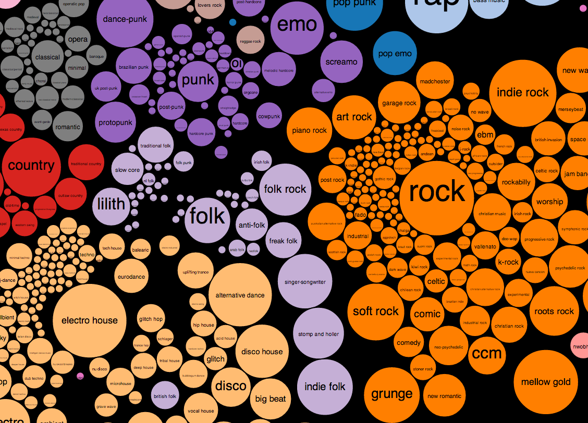
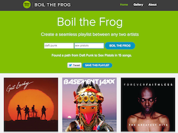
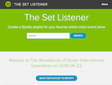
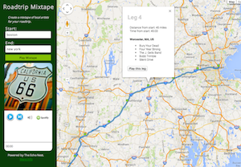
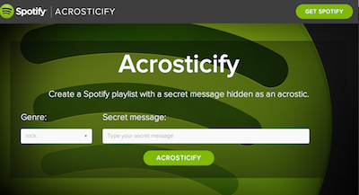

The Echo Nest / Spotify APIs
Build your music apps with the industry’s best music APIs.


Build your music apps with the industry’s best music APIs.
The Echo Nest and Spotify APIs provides broad and deep data on millions of artists and songs, making it easy for you to create an awesome listening experience for your users. You can tap into the power of the tightly linked Echo Nest and Spotify APIs to build world-class music apps that take advantage of all of the capabilities and deep data provided by both APIs. The Spotify and Echo Nest teams are working to make it as easy as possible for developers to use the Spotify and The Echo Nest APIs together. In particular we’re working to make sure that the Echo Nest has the most up-to-date view of the Spotify catalog and you can use Spotify artist and track IDs in any Echo Nest call that accepts Echo Nest artist and track IDs.
Once you've created an account, have received your API key and application credentials, check out some of our demos, take a look at the examples, get inspiration from the labs, download one of our client libraries and start building cool stuff.
We have a number of demonstration and example apps that show you how to do just about anything possible with The Spotify and Echo Nest APIs, from retrieving basic artist data, to advanced personalized, dynamic playlisting.
The best way to understand an API is by diving in and seeing working examples in action. Check out the examples on the Echo Nest / Spotify git repo.
Music exploration as a game
The 3D Music Maze is a WebGL app that lets you wander around a Castle Wolfenstein style maze and sample music and enjoy the album art.
Browse through the many hundreds of genres to discover new artists
With The Genre Browser you can learn about a new genres. You can read about the background and history of the genre, listen to its music, learn about the genre’s key artists and more.
Dynamic visualization of the genre space
Music Popcorn is a visualization of the music space that lets you explore and learn about the many different music genres.
Create seamless genre-transitioning playlists between artists
Boil the Frog lets you create a playlist of songs that gradually takes you from one music style to another. It's like the proverbial frog in the pot of water. If you heat up the pot slowly enough, the frog will never notice that he's being made into a stew and jump out of the pot. With a Boil the frog playlist you can do the same, but with music. You can generate a playlist that will take the listener from one style of music to the other, without the listener ever noticing that they are being made into a stew. The Source
Listen to your favorite artist's most recent show
Going to a show? Not totally familiar with an artist’s catalog? Give The Set Listener a try. The Set Listener is a web app that will create a Spotify playlist of an artist’s most recent show. The Source
Create a mixtape of local artists for your roadtrip
Roadtrip Mixtape is an application that you can use to create road trip playlists. Type in the name of your starting and ending points, and the application will create a playlist of music by artists that from the area you are traveling through.
Create a Spotify playlist with a secret message hidden as an acrostic.
Acrostify creates a Spotify playlist that embeds a secret message in the first character of each song in the playlist.
Download one of our many Echo Nest and Spotify client libraries. Follow along with our tutorials (Echo Nest, Spotify).
Detailed API documentation can be found online at:
If you have a problem or need more help with the Echo Nest or Spotify APIs check out our Echo Nest support forums and the Spotify support page.
http://developer.echonest.com/api/v4/artist/biographies?api_key=YOUR_API_KEY&id=spotify:artist:4Z8W4fKeB5YxbusRsdQVPbSimilarly, you can query for detailed information for a Spotify track with a query like so:
http://developer.echonest.com/api/v4/song/profile?api_key=YOUR_API_KEY&track_id=spotify:track:4toSP60xmDNCFuXly8ywNZ&bucket=id:spotify&bucket=audio_summary
You can also retrieve Spotify IDs from any Echo Nest call that returns artist, song or track info. To do this, you use the bucket=id:spotify parameter on any call that returns artists, songs or tracks. As an example, to find artists similar to Radiohead, with Spotify foreign IDs returned, issue a call like this:
http://developer.echonest.com/api/v4/artist/similar?api_key=YOUR_API_KEY&id=spotify:artist:4Z8W4fKeB5YxbusRsdQVPb&bucket=id:spotify
The returned list of similar artists include the spotify IDs in the output like so:
{
"foreign_ids": [
{
"catalog": "spotify",
"foreign_id": "spotify:artist:4CvTDPKA6W06DRfBnZKrau"
}
],
"id": "ARH1N081187B9AC562",
"name": "Thom Yorke"
}